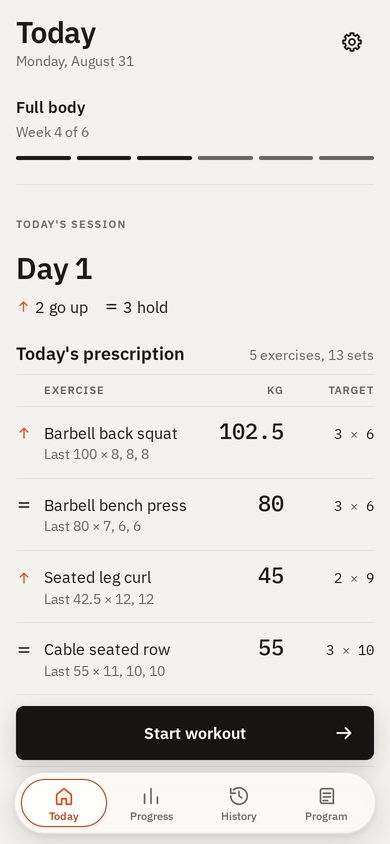
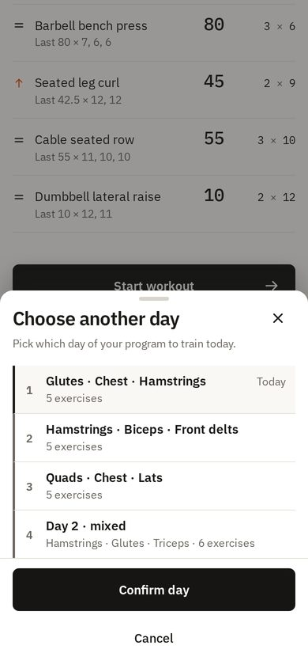
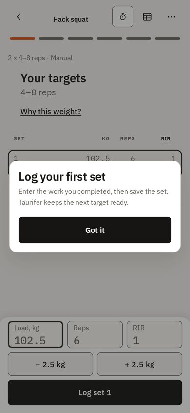
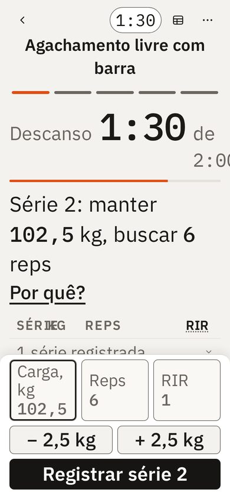
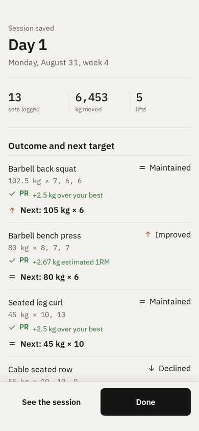
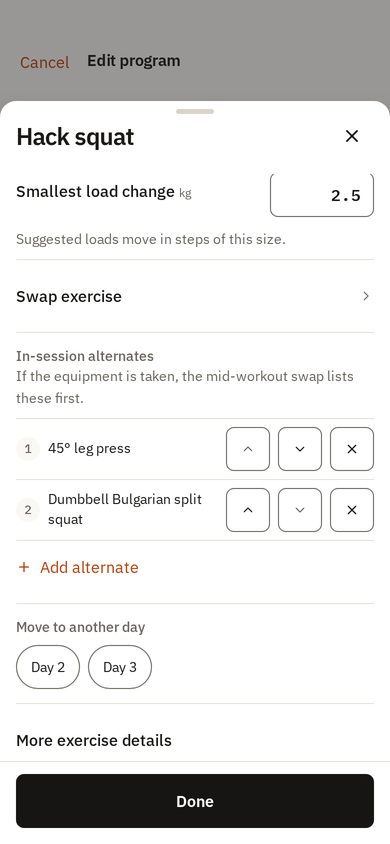
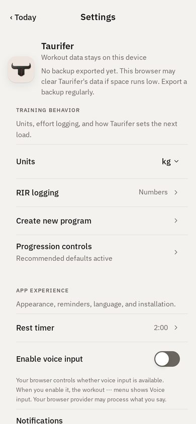
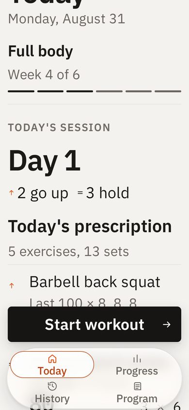

Touch physics, navigation, sheets and controls, in Taurifer's own Direction D look, Plex type and accent budget. Everything here is static HTML; the app is untouched.
Also inside the app at Settings → Prototype only.
Left: the committed catalog capture of today's app. Right: what changes. Each link opens the live prototype at that screen.
Today
Large title that collapses into a glass bar; press states on every row; touch and hold for actions.

- Start workout darkens and shrinks on touch-down, springs back on release
- "Today" collapses into the bar when the list scrolls under it
- Touch and hold an exercise: Why, Swap, Details, Skip today
- Bottom fade under the dock so text never collides with it
Open TodayChange day
Four ways out today (grabber, ×, Confirm day, Cancel) become one: picking a day commits.

- The check lands on the tapped day, the sheet leaves, Today updates
- A toast offers Undo (an owner choice)
- Swipe down or × dismisses with no change
Open the day pickerFocus
Push with parallax from Today. A tip that points at the shelf instead of blocking it.

- Anchored tip (default here); Inline and Centred under Prototype switches
- Log set: pressed tone on touch-down; the row lands in 160ms
- Hold −/+ to repeat; tap the selected field again for the wheel picker
- ⋯ opens an action sheet; End without saving asks once more
Open FocusFocus at 200% text (PT)
The rest block stacks, the ledger head goes, the shelf compacts so the open set stays in view.

- Set Text size 200% and Focus language Português above
- Rest label and total move under the clock
- Pads scroll sideways instead of growing the shelf
Open FocusSession summary
A full-screen cover that slides up, with one exit. No back: the session is saved.

- Slides up over Focus; Focus is gone underneath when you leave
- Done slides it down to Today
- Large title collapses; the footer is glass over the list
Open the summaryProgram editor
A page sheet that pushes the app back, Cancel and Done in its bar, its own drill-down, and a guarded dismiss.

- Three ↑ ↓ × buttons per alternate become one ⋯ / touch-and-hold menu
- Smallest load change is a stepper; Day is a pull-down menu
- With changes, a swipe down rubber-bands and asks Discard / Keep editing
- Swipe right inside the sheet to go back a level
Open the editorSettings
Native switches, segmented controls and a stepper; one back control and gutter.

- Switch off state is light with a 3:1 ring
- Appearance is a segmented control that applies at once
- Rest timer is a stepper (hold to repeat)
- Language is a pull-down menu
Open SettingsThe dock at 200%
Today it becomes a 2×2 grid. Here it keeps one row and one height.

- Labels cap at 1.3×; or icons only (owner choice)
- Touch and hold a tab for the large-content viewer; slide and lift to switch
- Opaque material while text is enlarged
Open the dock